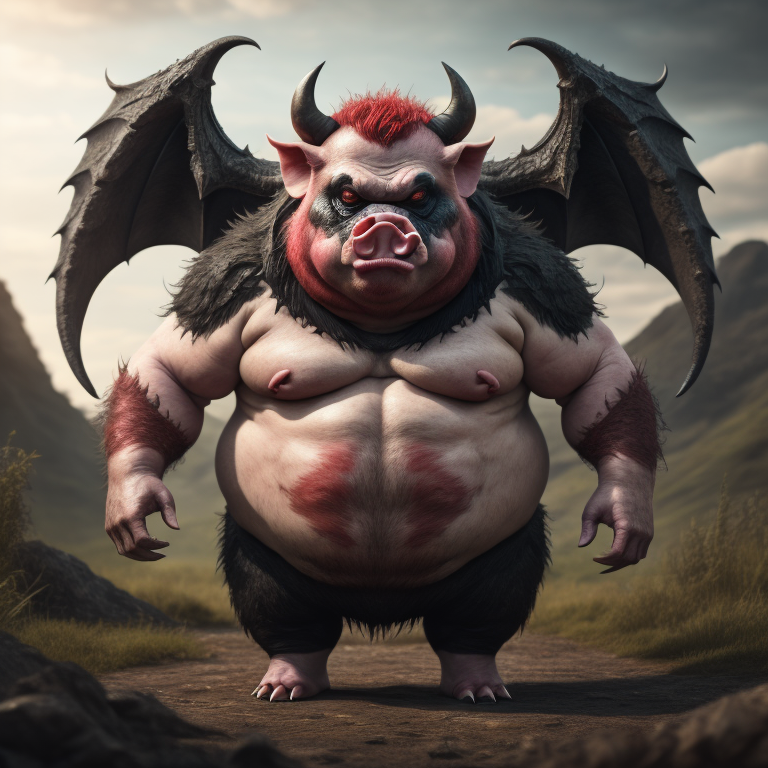

Characters
-
Daemon Devilwood

Daemon Devilwood: A Tale of Unearthly Power and Undying Resolve In the depths of the realm of Thordasha, where malevolence lurks in every shadow, a figure emerges with an enigmatic aura that sets him apart from the rest. Meet Daemon Devilwood, a mysterious being cursed with undeath, forever caught between the realms of the living and the dead. His origins shrouded in mystery, Daemon possesses an otherworldly power that defies the laws of nature. With dark eyes that hold the weight of countless experiences and a haunting past, Daemon navigates through a world where malevolent forces seek to unravel the very fabric of existence. Unbeknownst to him, his unique nature grants him an immunity to soul gazing, shielding him from the prying eyes of malevolence that seek to control and corrupt. Daemon's journey takes an unexpected turn when he crosses paths with Rivek, a skilled and unwavering warrior seeking justice for the malevolence that plagues their realm. United by a shared purpose, the two form an unlikely alliance, venturing deeper into the heart of darkness to uncover the truth behind the malevolence that threatens their world. As they traverse cursed forests, decrepit catacombs, and encounter enigmatic figures, Daemon's abilities and resolve will be put to the ultimate test. Along the way, he will be confronted with the dark desires of his own heart and the unfathomable secrets hidden within the forgotten forest. With the guidance of Seraphina of the Burning Blade, a mystical being bound to a sacred artifact, Daemon's quest for truth will lead him to face an ancient demon prince of undeath, Kurgoroth. A malevolent entity seeking dominion over life and death, Kurgoroth's malevolence poses a dire threat to the realms, and it will take all of Daemon's strength and determination to stand against the encroaching darkness. Join us on a journey of unearthly power, undying resolve, and the relentless pursuit of justice, as Daemon Devilwood rises to face the malevolence that seeks to consume him and the world he holds dear. In the battle of light against darkness, Daemon's fate is intertwined with the destiny of Thordasha, and only time will reveal the true extent of his powers and the sacrifices he must make for the realms to find balance once more.
-
Rivek

Rivek: A Warrior Forged in the Crucible of Battle Amidst the ever-looming malevolence in the realm of Thordasha, a figure emerges with the prowess of a seasoned warrior and the will of an unyielding soul. Meet Rivek, a battle-hardened fighter driven by a thirst for justice and a determination to confront the malevolence that plagues their world. With a sword in hand and a steely gaze, Rivek traverses the treacherous lands, his every step echoing the weight of countless battles fought and won. The scars etched on his weathered skin tell a tale of the emotional toll that witnessing dangerous encounters and confronting malevolence has taken on him. As fate would have it, Rivek's path intertwines with that of Daemon Devilwood, a being of mysterious power cursed with undeath. Drawn together by a shared purpose, their alliance will be tested in the face of darkness, as they venture into forbidden temples and forgotten forests in search of answers. With a heart that beats in rhythm with the will of justice and an iron will that refuses to falter, Rivek's skills as a warrior make him an indispensable ally in the battle against malevolence. Armed with his two-handed sword and unwavering loyalty to Daemon, Rivek stands firm against the malevolent forces that seek to bring chaos to their realm. Through battles with spectral entities and encounters with enigmatic figures, Rivek's mettle will be tested like never before. As he delves deeper into the heart of darkness, the true extent of his strength and the sacrifices he must make for the realms will be unveiled. Guided by the mystical Seraphina of the Burning Blade, Rivek and Daemon's quest for truth will lead them to face an ancient demon prince of undeath, Kurgoroth. With a malevolence that hungers for dominion over life and death, Kurgoroth's very presence threatens the stability of their world. Join us as we journey alongside Rivek, a warrior who walks the fine line between bravery and vulnerability, on a quest to vanquish malevolence and restore peace to Thordasha. Through the trials that await him, Rivek's unwavering spirit will forge a legacy that will be etched in the annals of Thordasha's history.
-
Lahsatyr

Lahsatyr: The Shadow Demon with a Dark Past In the realm of Thordasha, where malevolence lurks in every shadow, a figure shrouded in darkness emerges to wreak havoc upon the world. Meet Lahsatyr, a shadow demon with a twisted past and an insatiable thirst for power. Once a being of light and virtue, Lahsatyr's descent into darkness began with an insidious corruption that took root in his heart. Consumed by ambition and a desire for ultimate power, he sought to summon a demon from the depths of the abyss to grant him untold abilities. However, his pursuit of power came at a grave cost. His once pure heart was tainted by malevolence, and the love he once held dear withered away as darkness consumed his soul. The tragic tale of his past love, Seraphina of the Burning Blade, serves as a haunting reminder of the consequences of his actions. Now, Lahsatyr has become a formidable adversary, with powers that command shadows and malevolence at his every whim. With a sinister aura that sends shivers down the spines of those who dare cross his path, he seeks to reshape the realm in the image of malevolence. Bound by an unholy alliance with Kurgoroth, the demon prince of undeath, Lahsatyr's malevolence knows no bounds. Together, they weave a web of darkness that threatens to swallow the realms whole. With the Scepter of Kings as their coveted prize, their malevolent ambitions have grown bolder, and their power is unmatched. As our heroes, Daemon Devilwood and Rivek, venture forth to confront this malevolent force, they will find themselves entangled in a deadly dance with Lahsatyr. The shadow demon's cunning and dark sorcery make him a formidable foe, and his relentless pursuit of power will test the mettle of our courageous warriors. Join us as we unravel the secrets of Lahsatyr's malevolence and witness the clash of light and darkness in an epic battle for the fate of Thordasha. Will he succumb to the abyss that consumes him, or can redemption still be found within his corrupted heart? Only time will tell as the story unfolds, and the shadows of Thordasha writhe with malevolence.
-
Kurgoroth
Kurgoroth: The Demon Prince of Undeath From the depths of the infernal abyss, where darkness reigns and malevolence thrives, emerges Kurgoroth, the fearsome Demon Prince of Undeath. A creature of nightmarish proportions, his very presence engulfs the realms in an aura of dread and despair. At first glance, Kurgoroth is a nightmarish fusion of nightmarish creatures: his head resembles that of a warthog, with tusks dripping with blood and flesh, and a sinister grin that betrays his malevolent nature. His upper body is akin to that of a powerful gorilla, with bulging muscles and an intimidating stature. From his lower torso, the body of a fearsome bird of prey extends, its deadly talons poised to strike. But it is his large, leathery wings that truly set Kurgoroth apart. Sprouting from his back, these immense wings stretch out like a cloak of darkness, enabling him to soar through the skies with an eerie grace. Horns protrude from his skull, adding to his imposing figure and granting him an air of ancient wisdom and unholy power. As the Demon Prince of Undeath, Kurgoroth wields dominion over the realm of the deceased. With a mere gesture, he can summon legions of the undead, raising them from their eternal rest to serve his malevolent will. His eyes, like glowing embers, pierce through the darkness, seeing into the very souls of those who dare stand before him. Driven by an insatiable hunger for power and conquest, Kurgoroth seeks to spread his malevolence throughout the realms of Thordasha. With every step he takes, corruption follows in his wake, and the boundaries between life and death begin to blur. His alliance with the necromancer, Valen, further fuels his influence, amplifying his dark powers to catastrophic levels. Together, they form an unholy alliance that threatens to engulf the realms in eternal darkness. As our heroes, Daemon Devilwood and Rivek, confront the malevolence that plagues Thordasha, they will face the ultimate challenge in the form of Kurgoroth. The clash between light and darkness will test their resolve, and they must stand united to defy the malevolent grasp of the Demon Prince of Undeath. Prepare yourself to witness the epic confrontation between light and shadow, as Kurgoroth, the embodiment of malevolence, unleashes his unholy fury upon Thordasha. Can our heroes overcome the malevolent might of the Demon Prince, or will the realms be forever consumed by darkness? The battle for the fate of Thordasha is about to begin, and only the bravest will emerge victorious.
-
Valen

Valen: A Necromancer Consumed by Darkness
In the heart of the forbidden forest, where darkness lingers like a haunting melody, a figure emerges from the shadows with a thirst for forbidden knowledge and an insatiable desire for power. Meet Valen, the enigmatic necromancer whose malevolence knows no bounds. Once a scholar of ancient tomes and mystical arts, Valen's insatiable curiosity led him to delve into the darkest corners of the arcane. His obsession with unlocking the secrets of undeath and necromancy consumed him, and he became entangled in a sinister path that forever altered his fate. As he descended further into the abyss of malevolence, Valen's heart grew colder, and his once compassionate soul was consumed by darkness. He abandoned the path of righteousness, forsaking the light for the allure of the shadows, where his thirst for power would find its ultimate fulfillment. In his relentless pursuit of dark knowledge, Valen stumbled upon an ancient text that revealed the existence of the Scepter of Kings, a relic of unimaginable power said to grant dominion over life and death. The knowledge of its existence gnawed at his mind, and he became obsessed with acquiring its power for himself. Bound by an unholy alliance with the malevolent demon prince, Kurgoroth, Valen's necromantic powers grew exponentially. With the might of the demon prince at his command, he conjures armies of undead and commands the very essence of the shadows to bend to his will. Driven by ambition and an unyielding hunger for supremacy, Valen's malevolence becomes a formidable threat to the realms of Thordasha. With each step he takes, the corruption of Kurgoroth courses through his veins, fueling his dark powers and turning him into a fearsome adversary. As our heroes, Daemon Devilwood and Rivek, embark on their perilous quest to combat the malevolence that plagues Thordasha, they will be forced to confront the enigma that is Valen. His mastery of dark arts and cunning intellect make him a dangerous foe, and his obsession with the Scepter of Kings adds an air of unpredictability to his malevolent schemes. Join us as we unravel the secrets of Valen's past and witness the clash of light and shadow in a battle of epic proportions. Can our heroes resist the allure of Valen's malevolence, or will they succumb to the darkness that threatens to engulf them? Only time will tell as the fate of Thordasha hangs in the balance, and the malevolence of the necromancer looms ever larger.
-
Seraphina
Seraphina: The Burning Blade
Seraphina, the battle-hardened angel, once served as a revered weapon master, teaching warfare and combat techniques to the celestial legions of Heaven. But her destiny took a fateful turn when she encountered Lahsatyr, a leading member of the Sorcerer Kings, mortal wizards who turned from peace to war with the gods. As they interacted, Lahsatyr was struck with awe over Seraphina's celestial prowess. However, their admiration turned to betrayal when Lahsatyr backstabbed her, leading to her untimely demise. In a final act of defiance, Seraphina imbued her very essence into her weapon, the Burning Blade. Now, bound to the legendary weapon, Seraphina is a spirit filled with quiet anger, seeking revenge against the one who betrayed her. Her golden armor bears the scars of countless heavenly conflicts, a testament to her battle-hardened nature. With fierce eyes burning with intensity, she radiates strength and determination. Strong, majestic wings allow her to soar gracefully through the skies, each feather edged with fiery red, as if touched by the very flames of war. Her golden hair flows like molten metal, shimmering with a divine radiance that symbolizes her celestial nature. In her hand, Seraphina wields the Burning Blade, a weapon of celestial power engulfed in ever-burning flames. The hilt, adorned with celestial symbols, houses ancient enchantments that grant the sword its devastating might. As she journeys through the realms, Seraphina is driven by her desire to rid the world of Lahsatyr, the one who betrayed her trust and love. With an aura of power that commands respect from both allies and foes, she is the embodiment of celestial fury and courage, a warrior who will stop at nothing to defend the realms from malevolence and darkness. Her path is one of vengeance and justice, and she will face any challenge to fulfill her mission.